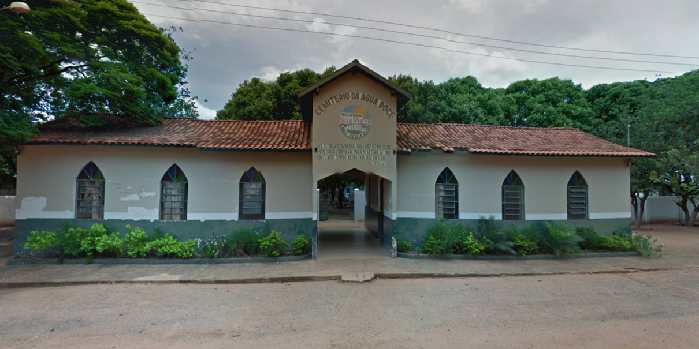
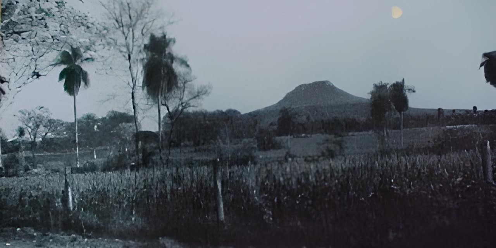
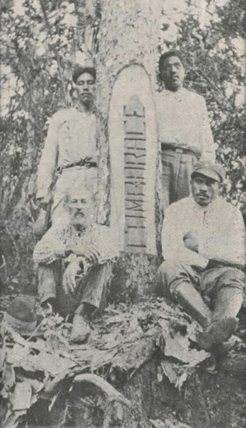
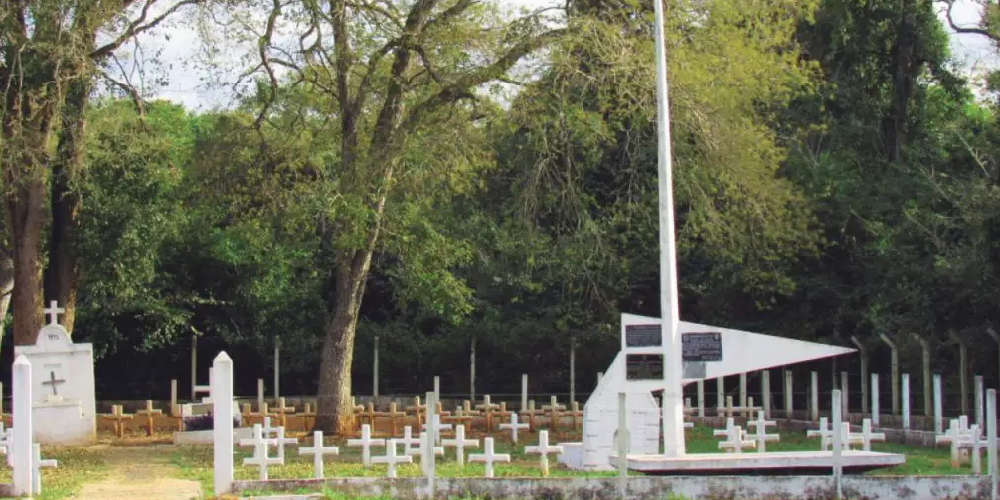
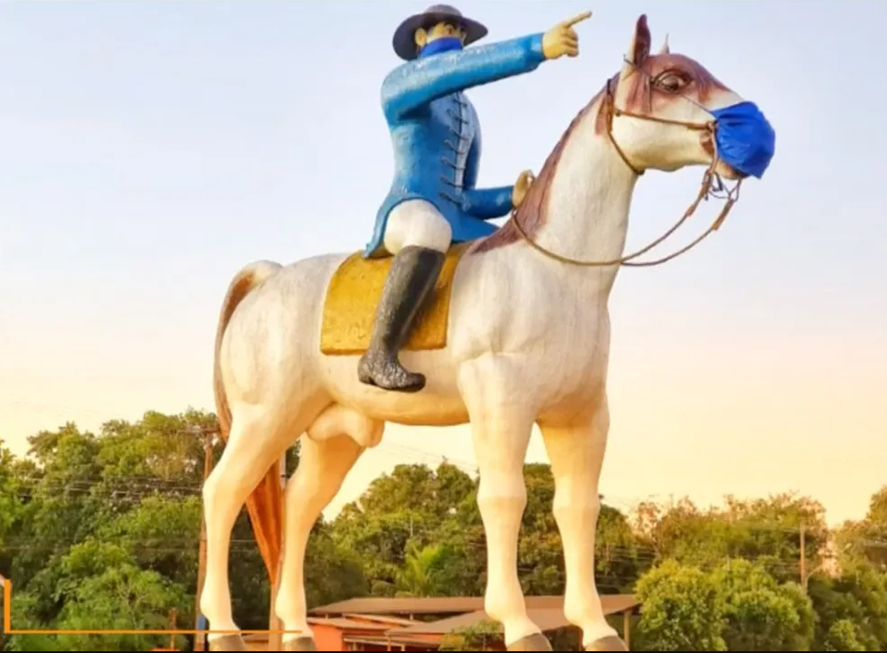
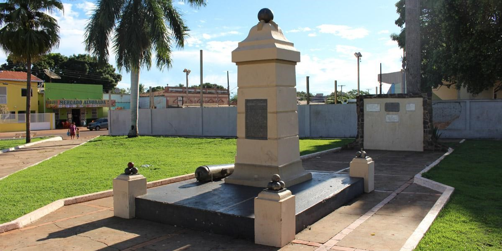
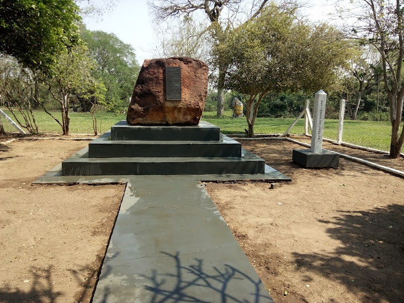

Monumentos Históricos

Monumento Internacional Nhandipa
Bela Vista MS


Cemitério do Água Doce
Bela Vista MS

Morro da Margarida
Bela Vista MS

Cambaracê
Bela Vista MS
(Propriedade privada, área rural)

Cemitério dos Heróis
Jardim MS

Monumento Guia Lopes
Guia Lopes Laguna MS

Praça dos Monumentos Históricos
Nioaque MS

Porto Canuto
Anastácio MS